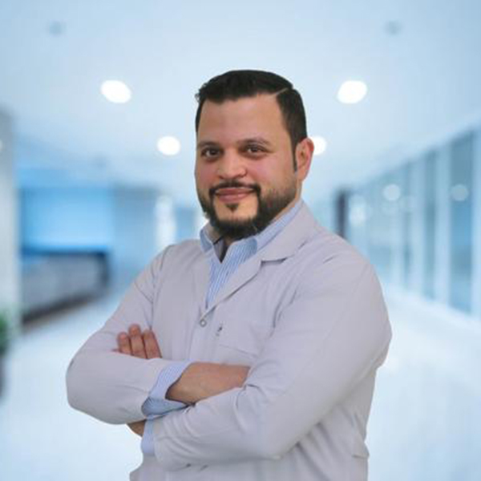

Dr. Ahmed El Shehri · Silwadi Dental Center, Abu Dhabi
Doctor profile
Dr. Ahmed El Shehri
Specialist Endodontics
Dr. Ahmed El Shehri is a specialist endodontist focused on diagnosis and root canal care. His public centre profile describes a conservative, minimally invasive approach to endodontic treatment.
SpecialtySpecialist Endodontics
Clinical baseBani Yas Tower, Abu Dhabi
CentreDr. Munir Silwadi Dental Centre
Clinical focus
Root canal treatmentSpecialist assessment and non-surgical root canal care.
Conservative careA minimally invasive approach aimed at preserving natural tooth structure where clinically possible.
Diagnostic supportHis public profile references digital radiography and 3D imaging as part of endodontic assessment.
Profile notes
His current centre profile emphasizes patient education, conservative treatment planning and the use of diagnostic imaging to support endodontic care.
Specialist endodonticsRoot canal careMinimally invasive approach